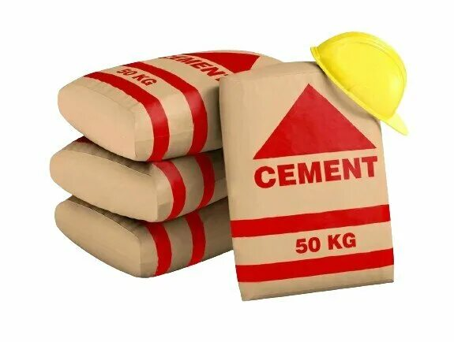
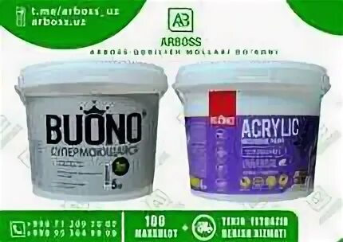
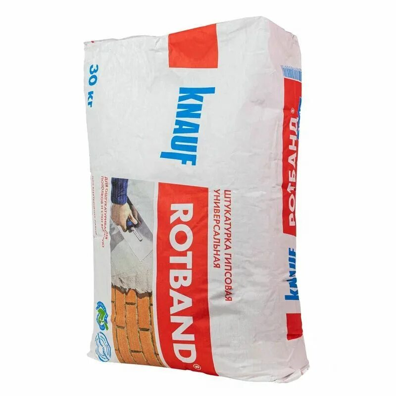
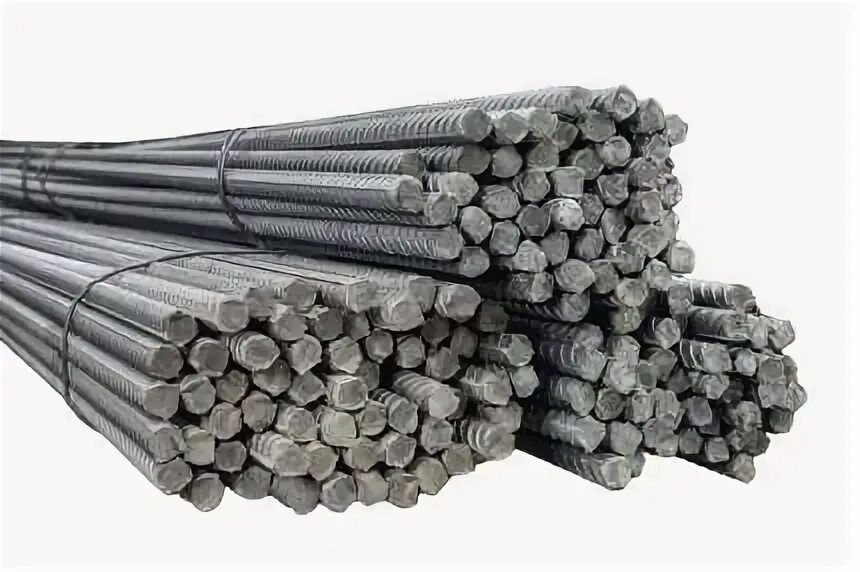

Aksiya 5-martgacha davom etadi va ushbu vaqt oralig'ida mahsulotlarni chegirma bilan
xarid qilishga ulgurib qoling

Huaksin sement (M‑500)
Huaksin sement (M‑500) — beton va aralashmalarda maksimal mustahkamlik beradi.
Bardoshli va suvga chidamli, sizning loyihangiz uzoq yillar xizmat qiladi.
45 000 so'm
38 990 so'm

"Vesta Lux" bo'yog'i
“Vesta Lux” bo‘yoq — devor va shiftlarga yorqin rang beradi va tez quriydi.
Bardoshli, suv va dog‘ga chidamli, interyeringizni uzun vaqt go‘zal ko‘rsatadi.
160 000 so'm
144 990 so'm

Rotband-yarimtayyor gips qotishmasi
Rotband — devor va shiftlarni tez va silliq qiluvchi, ishni osonlashtiruvchi
premium gips aralashmasi! Tez qotadi, mukammal silliqlik beradi va professional
natija ta’minlaydi.
47 000 so'm
41 990 so'm

Tashkent armatura
Armatura — uyingiz, ofisingiz yoki inshootlaringizni mustahkam qiluvchi
ishonchli po‘lat tayanch. Kuchli va bardoshli beton uchun eng yaxshi tanlov!